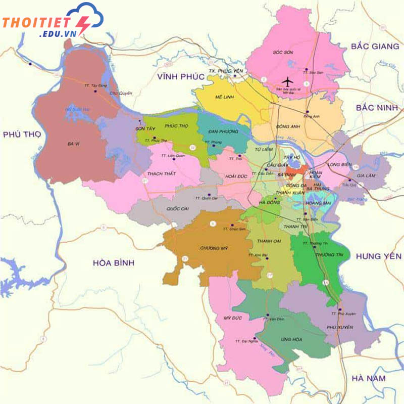

14/11/2024
Nếu bạn lần đầu đến với Hà Nội, đừng quên tham khảo những thông tin giới thiệu về Thủ đô Hà Nội bao gồm: Vị trí địa lý, khí hậu, lịch sử, văn hóa và con người để có sự chuẩn bị tốt nhất cho chuyến đi.
Hà Nội là Thủ đô và một trong hai đô thị loại đặc biệt của Việt Nam. Trong các bài viết giới thiệu về Hà Nội, thành phố này có vị trí từ 20°53’ đến 21°23’ vĩ độ Bắc và 105°44’ đến 106°02’ kinh độ Đông, thuộc khu vực trung tâm vùng đồng bằng sông Hồng màu mỡ.
Hà Nội tiếp giáp với các tỉnh Thái Nguyên, Vĩnh Phúc, Hà Nam, Hòa Bình, Bắc Giang, Bắc Ninh, Hưng Yên và Phú Thọ. Bên cạnh diện tích tự nhiên rộng lớn khoảng 3.358,6 km², Hà Nội còn có hệ thống sông ngòi phong phú và đa dạng như sông Hồng, sông Đuống, sông Cầu, sông Đáy và sông Nhuệ.
Nếu tìm hiểu sâu hơn trong những bài giới thiệu chung về Hà Nội, bạn sẽ biết Thủ đô còn được chia thành 30 quận huyện thuộc thành phố, trong đó có 12 quận nội thành và 18 quận huyện ngoại thành. Có thể nói, vị trí địa lý của Hà Nội mang ý nghĩa quan trọng về mặt kinh tế, giao thông, quân sự và chính trị của cả nước.
Hà Nội là vùng miền đặc trưng với khí hậu nhiệt đới gió mùa, độ ẩm cao. Do đó, đây cũng là nơi biểu hiện bốn mùa Xuân, Hạ, Thu, Đông rõ rệt nhất trong năm. Để có một chuyến đi trọn vẹn, bạn đừng quên đọc kỹ mục thời tiết và khí hậu trong các bài giới thiệu về Hà Nội.
Mùa hè Hà Nội thường nóng và nhiều mưa, kéo dài từ tháng 5 – tháng 9; mùa đông lạnh buốt và hanh khô, kéo dài từ tháng 11 – tháng 3 năm sau. Hai mùa có thời tiết đẹp và dễ chịu nhất tại thành phố này là mùa xuân và mùa thu vì lúc này khí hậu trở nên khá dễ chịu và mát mẻ.